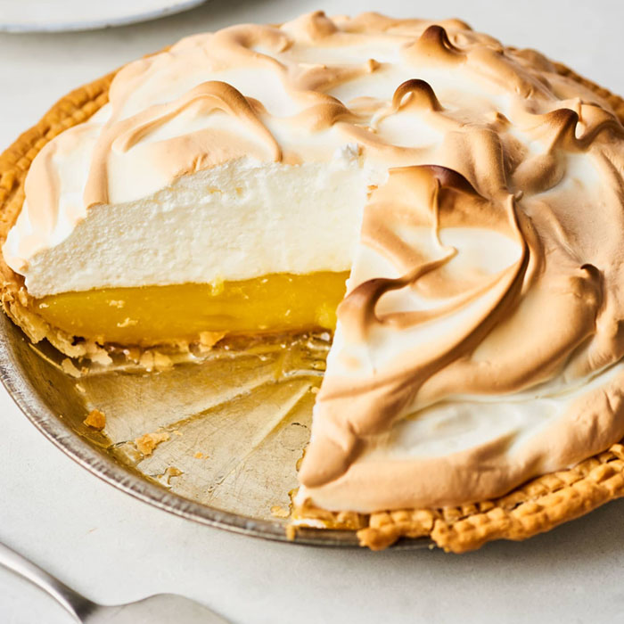

Lemon Meringue Pie

How to Make Tasty Lemon Meringue Pie
Lemon meringue pie, with its tender-crisp crust, tangy-rich filling, and light-as-air meringue, is the perfect mid-winter baking project. I think you’ll be pleasantly surprised by how easy it is to make the classic pie — and we’ve made it even easier with our simple three-step process.
There are two essential components to any lemon meringue pie. The first is a thick filling, abundantly flavored with lemon juice and zest, that is both sweet and tangy and, once set, can be cut into sturdy slices. The second is the meringue, which should be light and fluffy with a crispy, caramelized top. The filling cooks primarily on the stove, meaning par-baking the crust is essential. When it’s brown and crisp, you’ll pour in the thickened filling, top with the meringue, then return to the oven for just a few minutes to toast the meringue.
Ingredients
For the Filling:
- 4 large egg yolks, whites reserved for the meringue
- 1 cup granulated sugar
- 1/3 cup cornstarch
- 2 tablespoons all-purpose flour
- 1 1/2 cups water
- 1 tablespoon finely grated lemon zest
- 1/4 cup freshly squeezed lemon juice (from about 2 medium lemons)
- 4 tablespoons (1/2 stick) unsalted butter, cubed and at room temperature
For the meringue:
- 4 large egg whites, at room temperature
- 1/4 teaspoon cream of tartar
- 1/3 cup granulated sugar
Instructions:
- Heat the oven to 400°F and parbake the pie crust. Arrange a rack in the middle of the oven and heat to 400°F. Roll out the pie dough and transfer to a 9-inch standard pie pan. Press the dough into the bottom and along the sides of the pie plate, being careful not to puncture the dough. Crimp or press decorations into the edge of the crust and trim any excess dough away with a paring knife. Line the dough with parchment paper and fill with pie weights, dry beans, or granulated sugar for blind baking. Bake until golden-brown, 20 to 25 minutes. Using the parchment paper as a sling, remove the pie weights and set the pie crust aside to cool while you prepare the filling.
- Whisk the egg yolks in a medium bowl and set aside. After separating the eggs (saving the whites for the meringue), gently whisk together the yolks in a medium bowl and set aside.
- Combine the sugar, cornstarch, and flour in a medium saucepan. Place the sugar, cornstarch, and flour in a 4-quart saucepan and whisk to combine and break up any small clumps.
- Add the water, lemon zest, and juice and cook to thicken. Add the water, lemon zest, and lemon juice to the sugar mixture and whisk until smooth. Place over medium heat and bring the mixture to a simmer and cook, stirring constantly with a rubber spatula or wooden spoon, until the mixture turns from cloudy to slightly opaque, about 7 minutes from start to finish. Immediately remove from the heat.
- Add the butter then temper the starch mixture with the egg yolks. Add the butter and stir just to combine; most of it will melt right away. Ladle about 1/2 cup of the sugar-lemon mixture into the egg yolks and whisk to combine. Continue adding the warm mixture in 1/2-cup increments until half of the mixture is added to the egg yolks. Add the egg yolk mixture back to the pot and whisk to combine.
- Return the pan to the heat briefly. Return the pot to medium heat and return to a simmer, stirring constantly with the wooden spoon or spatula, until thick and glossy, about 2 minutes. Pour the filling into the cooled pie crust and set aside while you make the meringue.
- While the filling is hot, make the meringue. Using a stand mixer fitted with the whisk attachment or a large bowl and an electric hand mixer, beat the egg whites and cream of tartar on medium speed until foamy. Increase the speed to high and gradually add the sugar. Beat until medium-stiff peaks form, about 5 minutes.
- Toast the meringue. Spoon the meringue onto the hot filling — do your very best to make sure that all of the filling is covered with the meringue, making direct contact with the crust. Place the pie in the oven and toast until the meringue is lightly golden-brown, 5 to 7 minutes. Err on the side of lightly toasted to prevent overcooking the meringue and having a weepy pie.
- Cool the pie completely before slicing! Cool the pie at room temperature for at least 6 hours before slicing.